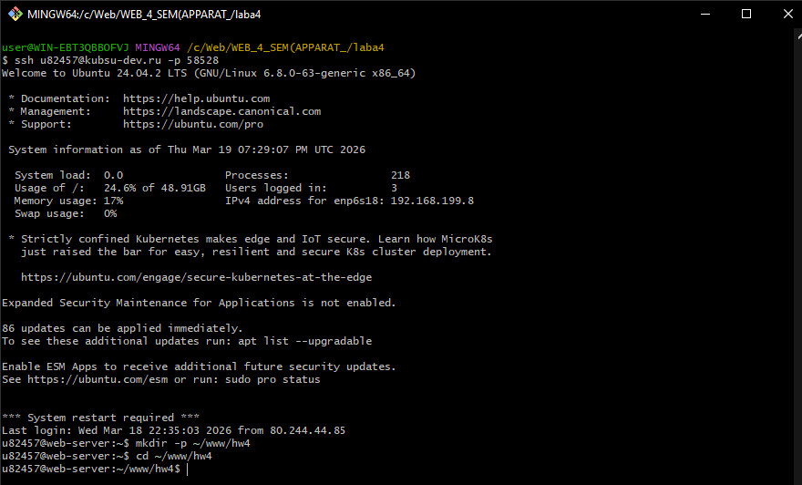
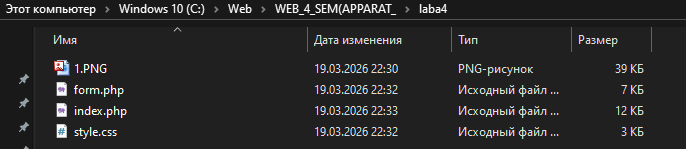
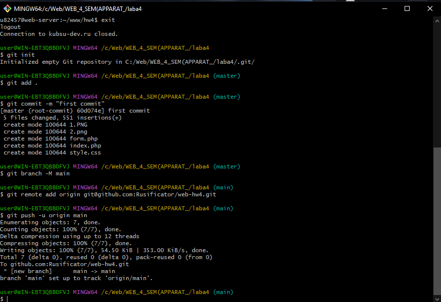
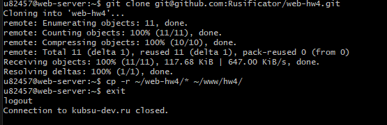
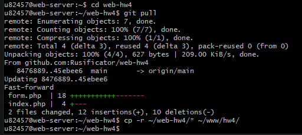

Через SSH выполнен вход на сервер kubsu-dev.ru, создан каталог ~/www/hw4.

Скриншот 1: Подключение по SSH и создание каталога
На локальном компьютере в папке laba4 созданы файлы: index.php, form.php, style.css и скриншоты для отчёта.

Скриншот 2: Содержимое локальной папки
git init
git add .
git commit -m "first commit"
git branch -M main
git remote add origin git@github.com:Rusificator/web-hw4.git
git push -u origin mainЛокальный репозиторий создан, выполнена отправка файлов на GitHub.

Скриншот 3: Отправка на GitHub
git clone git@github.com:Rusificator/web-hw4.git
cp -r ~/web-hw4/* ~/www/hw4/Репозиторий склонирован в домашнюю директорию, файлы скопированы в веб-доступный каталог.

Скриншот 4: Клонирование и копирование
git pull
cp -r ~/web-hw4/* ~/www/hw4/При повторных изменениях выполнялся git pull и повторное копирование в ~/www/hw4.

Скриншот 5: Обновление на сервере
Определение: Cookies — это небольшие фрагменты данных, которые сервер отправляет браузеру и которые сохраняются на стороне клиента. При каждом последующем запросе к этому серверу браузер автоматически отправляет соответствующие куки обратно.
Преимущества использования в задании:
| Аспект | Задание №3 | Задание №4 |
|---|---|---|
| Валидация | Выполнялась на сервере, но при ошибках форма просто перезагружалась с заполненными полями (через переменные PHP). | При ошибках происходит редирект на GET, а информация об ошибках и значениях передаётся через Cookies. |
| Подсветка ошибок | Не требовалась, только общие сообщения. | Поля с ошибками подсвечиваются красным (класс .error), рядом выводятся конкретные сообщения. |
| Сохранение значений | Только в БД, форма после успеха очищалась. | После успешной отправки значения сохраняются в Cookies на год, и при следующем заходе форма автоматически заполняется этими данными. |
| Обработка ошибок | Ошибки хранились в массиве $errors и передавались непосредственно в форму. |
Ошибки сохраняются в куки (full_name_error и т.д.), при GET-запросе они считываются и сразу удаляются. |
Таким образом, задание №4 углубляет понимание работы с Cookies, учит правильно передавать состояние между запросами и улучшает пользовательский интерфейс за счёт подсветки ошибок и сохранения введённых данных.